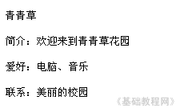
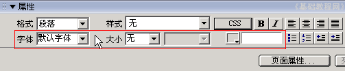
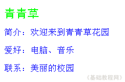
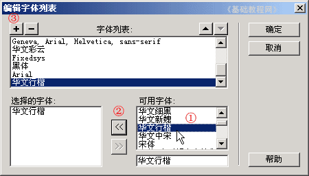
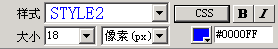

Dreamweaver 8 基础入门教程
二、编辑文字 返回
网页的内容大部分是文字，文字的属性中包括、字体、字号和颜色等，下面我们通过一个练习来学习；
1、启动Dreamweaver
1）点击“开始－所有程序－Macromedia－Macromedia Dreamweaver 8”， ；
；
2）在中间的“创建新项目”中点第一个 HTML，打开一个空白文档；

3）点菜单“文件－保存”命令，把文件名改为 index ，位置保存在上次建的站点中，
把标题改为“青青草主页”，保存一下文件，下面输入内容；
2、设置文字
1）输入下面的内容，输完一行后按一下回车键(也可以写自己的内容)，输完保存一下文件；

2）下面设置文字格式，拖黑选中标题“青青草”，在下面的侧边栏，属性面板中找第二排的各个按钮，依次是字体、大小、颜色；

3）按从左到右的顺序，把字体设为“黑体”、大小设成“24”、颜色设为绿色，标题一般要醒目些；
4）再拖黑选中下面的三行内容，在下面的属性面板中，把字体设为“新宋体”、大小为“18”、颜色为蓝色；

5）如果字体太少可以，点列表下边的“编辑字体列表..”，添加其他字体，
先在右边的列表中找到字体，再点中间的 << 按钮添加到左边，然后点上边的加号按钮，即可添加字体；

6）设好以后，在属性面板的第一排，“样式”旁边会出来一个STYLE2，这是自动保存了字体、字号、颜色的样式表，下次可以直接用，不用再一个一个设了；

在颜色按钮的旁边，有一串颜色代码，用数字代表颜色，以井号#开头的6个数字；
本节学习了设置文字格式的方法，认识了属性面板中的一些按钮，如果你成功地理解并完成了练习，请继续学习下一课内容；
本教程由86团学校TeliuTe制作|著作权所有
基础教程网：http://teliute.org/
美丽的校园……
转载和引用本站内容，请保留版权信息和本站链接。